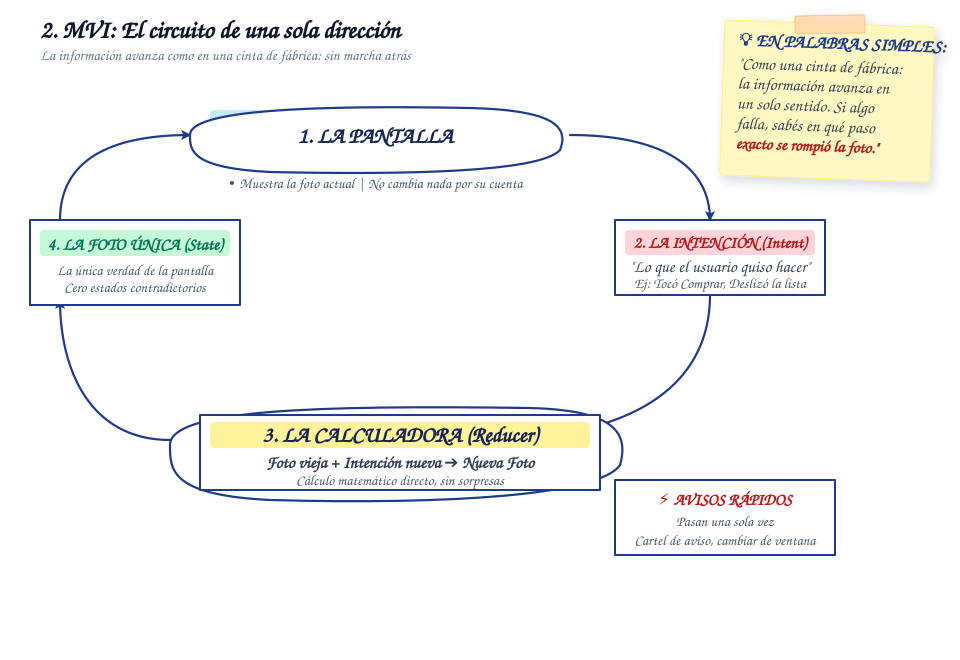

Model-View-Intent (MVI)
Flujo unidireccional y estados inmutables conducidos por intenciones explícitas del usuario.
Animación Explicativa del Flujo
¿Qué es el patrón MVI?
Model-View-Intent (MVI) es un patrón arquitectónico diseñado para garantizar un flujo de datos estrictamente cíclico y cerrado (Unidirectional Data Flow). Nace como evolución frente a arquitecturas donde la interfaz debe coordinar múltiples estados asíncronos independientes, unificando toda la información de la pantalla en un único estado inmutable.
En MVI, las acciones del usuario no mutan variables directamente: se despachan como intenciones explícitas (Intents, representadas comúnmente con sealed interface en Kotlin). El modelo procesa la intención, ejecuta la lógica de negocio y emite una nueva copia inmutable del estado que la vista renderiza sin ambigüedades.
Diagrama Conceptual

Ventajas en Proyectos Reales
-
Estado Único Predecible (Single State Stream): Se erradican las condiciones de carrera entre variables independientes. La interfaz solo observa un flujo de estado consolidado que representa la pantalla completa en cada instante.
-
Reproducibilidad y Depuración Forense: Al ser cada cambio de pantalla el resultado directo de una intención explícita, es posible registrar la secuencia de eventos (Time-travel debugging) y recrear errores reportados en producción con exactitud.
-
Comportamiento Determinista en UI: La inmutabilidad garantiza que la vista sea una función matemática pura del estado, impidiendo que existan estados intermedios inconsistentes o pantallas parcialmente actualizadas.